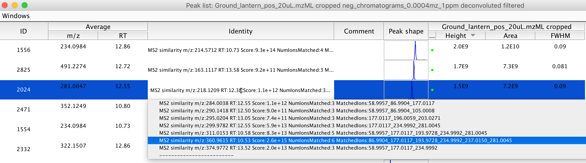

Ions arising from compounds with similar chemical structures often give similar fragmentation patterns (MS2 spectra), therefore calculating the similarity between MS2 spectra is a useful approach for the discovery of structurally similar compounds. This module calculates the similarity between centroided MS2 spectra associated with two peaklists. These two peaklists can be the same peaklist, or different peaklists. The module outputs the result of the search, the MS2 similarity comparisons of Peaklist (1) with Peaklist (2), into the "Identity" column of Peaklist (1). In practice, you can consider the peaks in Peaklist (1) "bait", which will be used to "fish" for MS2 similarity from Peaklist (2). Peaklist (1) or Peaklist (2) can be a single peak + MS2 spectra, or an entire experiment.
Example output of the MS2 similarity module:

In this example, the presumed precursor ion of m/z 360.9615 at RT 10.53 has a high degree of MS2 spectral similarity to the MS2 of the precursor ion with m/z 281.0047 & RT 12.55.
In actuality, precursor ion 360.9615 is the [M+H] of the sulfonated version (sulfoluciferin) of the 281.0047 compound (firefly luciferin). Sulfoluciferin was discovered by a MS2 similarity approach.
See here for more information: (Fallon et al., 2016)
The similarity metric used is as follows: For all MS2 spectra in Peaklist (1) "MS2 spectra A", and Peaklist (2) "MS2 spectra B", iterate over all ions in MS2 spectra A (ion "i"), and over all ions in MS2 spectra B (ion "j"). For a given ion, only include this ion in downstream calculations if its intensity is greater than the minimum ion intensity parameter. Compare the m/z values of ions "i" and "j", and if these m/z values are within the range specified by the m/z tolerance parameter, consider these ions identical, and therefore "matched". If two ions match, roughly score the match by multiplying the intensity of ions "i" and "j" and save that as the "ion match subscore". Repeat this for every ion i and j in MS2 spectra A and MS2 spectra B, and report the sum of the ion match subscores as the total "spectral match score". If this spectral match score is greater than the minimum spectral match score pareamter, annotate the "Identity" column of Peaklist (1) with the matched ions, and the total spectral match score of the MS2 similarity calculation.
The score from of a MS2 similarity match should not be taken as an absolute measure, as it depends on the instrument reported intensity value, which is an uncalibrated and relative measure.
That being said, as the reported score increases when the intensity of the matched ion is higher, it is useful as a quick metric to find the matches between the most intense MS2 spectra, and potentially the most reliable compounds.
It is worth mentioning that the link between the MS2 spectra, and the presumed precursor ion in the peaklist is somewhat tentative. As the isolation window of the quadrapoles typically used for selection of the precursor ion in MS2 fragmentation analysis is typically around ~1 m/z unit,
ions from the MS2 fragmentation spectra from an abundant compound with a long chromatographic tail will often show up in the MS2 values of unrelated compounds, but whose precursor isolation window picks up ions from the original compound.
An experimental Python script which converts the MS2 similarity relationships exported from MZmine2 in CSV format into GraphML format suitable for viewing in the freely available graph manipulation software Cytoscape is available on Github (https://github.com/photocyte/ms2_graph).